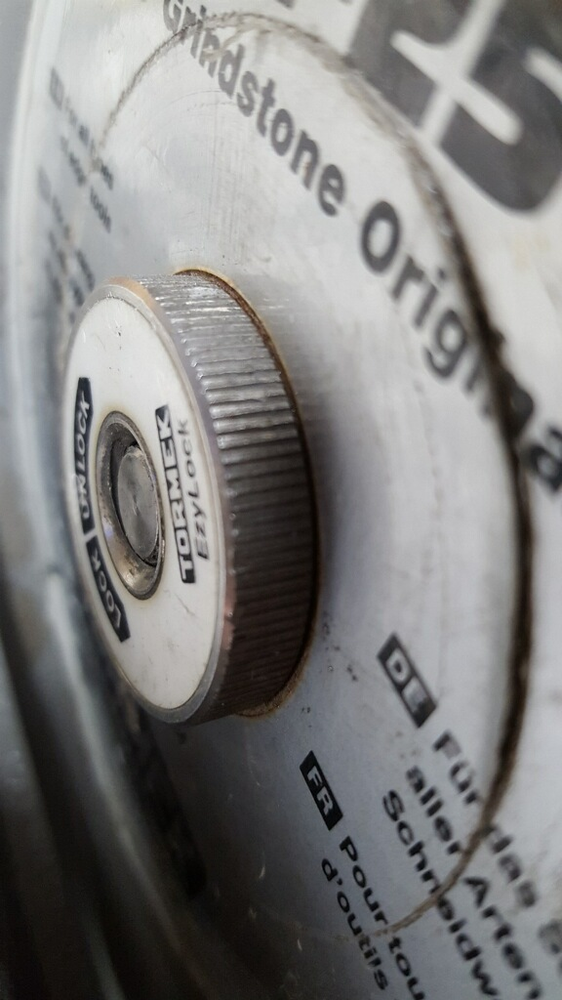
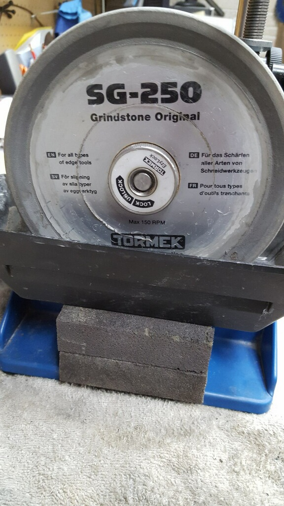
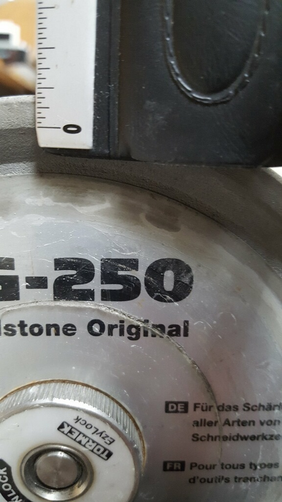

Practical Limits: on the larger Tormeks (T-2000, T-7, & T-8):
Longer knives = 200 mm diameter
Everything else = 180 mm diameter
On the larger Tormek grinders (T-2000, T-7, & T-8), the traditional grindstone (not the diamond ones) starts out at 250mm diameter, and over time, wears down with use. But the sharpener should remember, grindstones are like wood pencils or brake shoes - consumables meant to be worn down with use. And, when the grindstone gets down to about 190mm, it is basically not usable as it won't reach down into the water any more.
Grindstones
Machine
Diameter
Width
Useful Life
Shaft Diameter
Starting
Minimum
T-2000
250 mm
180 mm
50 mm
1,182 cm3
12 mm
T-7
T-8
T-1200
200 mm
130 mm
40 mm
726 cm3
T-3
T-4
Fortunately, there are things you can do. But please note: experience has shown that there are limits to this endeavour.
When sharpening knives with long blades on a grindstone which has too small of a diameter, the side-to-side movement of the knife will be limited by the honing wheel or some other part on the Tormek machine's base. This happens when pulling the knife towards the honing wheel (the LA-220 Honing Wheel is 220 mm in diameter).
On the larger units (T-8, T-7, & T-2000) there is a minimum size limit of 180 mm. This is driven by the fact that, the Micro Adjust nut on the US-105 Universal Support prevents the TT-50 Truing Tool from being used on grindstones smaller than 180 mm.
Wood used to raise the trough
Option 1 : Raise the Water Trough
You can adjust the water level on the T-8 using the built-in feature. This is not a feature on the T-7 nor the T-2000.
The picture to the right shows the T-2000's water trough sitting on ¾ inch thick plywood which is screwed to a 2x4. This sets the water trough about 2 ½ inches (64 mm) above the base, which is about ½ inches (14 mm) higher than if the trough were hung normally on the machine's tabs.
Raising the water trough like this, raises the water level, allowing for use of more of the grindstone. And, as the grindstone is worn down to a smaller diameter, there is no issue with it rubbing on the bottom of the trough.
It isn't pretty, but it does work well (kinda like me).
Should you buy a T-4 just to get more use from your grindstones?
This approach has been questioned by some. They argue that the cost of a T-4 is high enough that purchasing a new grindstone may be a better financial option. If you need a T-4 anyway (e.g., to carry it to a farmers market), then this may be a good option.
In the video below from Dan @ Exact Blade, Dan notes that his shop goes thru a 250mm grindstone every month on their larger machines (T-7 or T-8). He purchased some T-3s so that he could continue using the life left in those grindstones. This is a bit on the high end of use; however he does make a good case.
Option 2 : Use the Worn Grindstone on a T-3 or T-4
The grindstones from a bigger machine, once worn down to 200mm or less, will fit on a smaller machine. The grindstone is 50 mm wide (vs. the normal 200mm grindstone which is 40 mm wide), but it still fits. And, as noted in the table below, it gets another 51% out of the same stone.
Activity
Starting Diameter
Minimum Diameter
Useful Life
Use 1st part on larger machine: 250 mm grindstone used down to 180 mm
250 mm
180 mm
1,182 cm3
Use remaining life on smaller machine: 180 mm grindstone used down to 130 mm
180 mm
130 mm
609 cm3
Total life
1,781 cm3
Dan @ Exact Blade does this, and has provided the pictures below.

The T-3 nut fits over the wider grindstone without any modifications

As the grindstone gets used, the water trough can be raised to raise the water level

Very little of the stone is remaining
Notes:
As the grindstone wears down on the smaller machine, you can also raise that trough, further extending the grindstone's life on that machine as well. Dan shows that in the middle picture above.
Personal Anecdote: After many years, my SB-250 grindstone was down to 180 mm, and I was no longer able to use it on my T-2000. Fortunately though, Curtis (CB on the Tormek forum) was able to make use of this grindstone on his T-4.
The benefits of this are :
Curtis is able to get an SB grindstone for his T-4 (pictures of my old grindstone on his T-4 are to the right), and
The grindstone is not simply collecting dust in my shop ... instead it is providing many more years of proud use to another sharpener.
The video below is from Dan at Exact Blade. This video shows the use of his worn down SG-250 grindstones on his T-3. Dan does note that he will only take the stones down to the label (about 140 mm), Even at that, he's extracting another 503 cm3 (43%) out of his grindstone investment.
Used SB-250 grindstone taken from a T-2000 and put onto a T-4